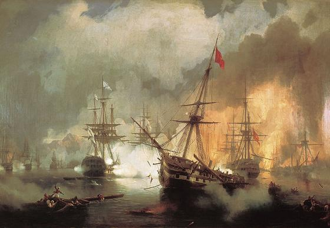
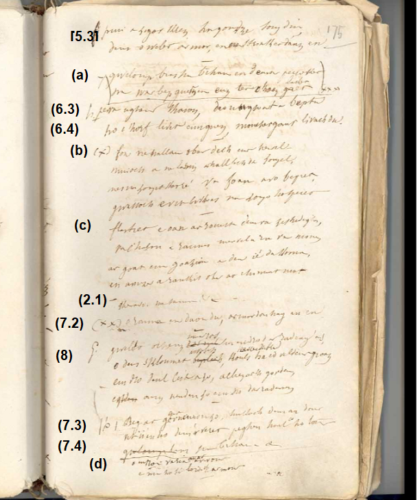
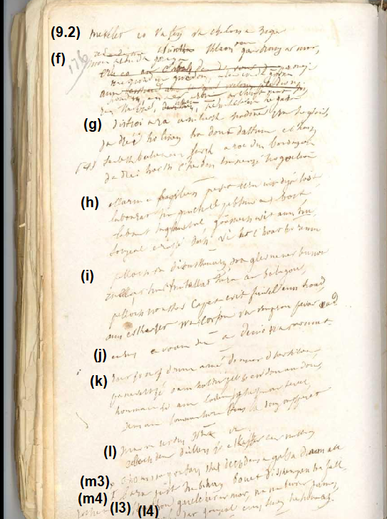
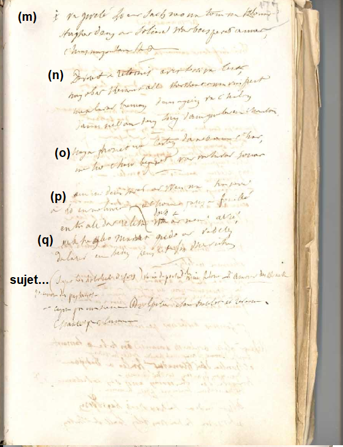
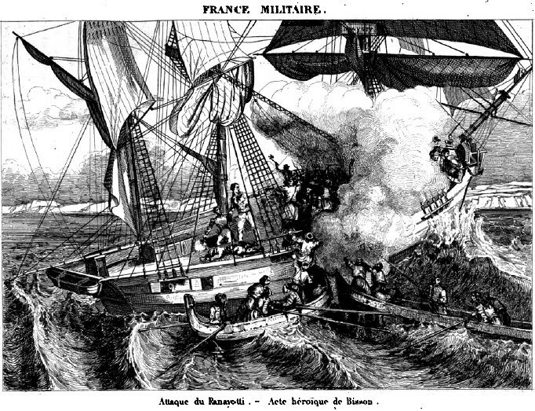

Le mal du pays
Homesickness
Dialecte de Cornouaille
|
En outre, des notes pp. 270-271 relatent une visite de La Villemarqué à l'Île de Batz chez le fils d'Yves Tremintin, rescapé du sabordage du Payanoti par son capitaine Hippolyte Bisson au large de Stampolia, près de Smyrne, le6 novembre 1827. Cet épisode fait suite à la bataille de Navarin, le 20 octobre 1827. - sous forme manuscrite . Lédan, IV: "Guerz ar martolod yaouanc breton". - Il a été publié dans des recueils . Dufilhol, "Guyonvarc'h", 1835: Sonen er Vreton yoang (version identique à celle de Lédan). . A. Bourgeois: ("Kanaouennoù pobl" 72), "Ar martolod yaouank", (Châteaulin, 1889 et dans le "Bulletin de la Société Académique de Brest", 1895-6). . Laterre: ("Kanaouennoù Breiz Vihan"), "Kimiad ar Martolod", (coll. à Carhaix). |
 Bataille de Navarin (20 octobre 1827) par Ivan Aïvazovsky (1817-1900) |
Besides, notes pp. 270-271 relate a visit by La Villemarqué to Isle of Batz, paid to the son of Yves Tremintin, survivor of the blowing up of the brick Payanoti by Captain Hippolyte Bisson off Stampolia, near Smyrna, on November 6, 1827. This episode follows the Battle of Navarino, October 20, 1827. - as a MS . by Lédan, IV: "Guerz ar martolod yaouanc breton". - It was published in collections . Dufilhol, "Guyonvarc'h", 1835: Sonen er Vreton yoang (same version as Lédan MS). . A. Bourgeois: ("Kanaouennoù pobl" 72), "Ar martolod yaouank", (Châteaulin, 1889 and in "Bulletin de la Société Académique de Brest", 1895-6). . Laterre: ("Kanaouennoù Breiz Vihan"), "Kimiad ar Martolod", (coll. à Carhaix). |
Mélodie - Tune 1
(Celle de Gwreg ar C'hroazour , selon le Barzhaz)
Mélodie - Tune 2
"Ar martolod yaouank", (mode hypophrygien) Tiré de "Kanaouennoù Pobl", chansons recueillies par Alfred Bourgeois
dans la deuxième moitié du XIXème siècle ; le recueil a été publié en 1959 à Paris.
Source: le site de M. P. Quentel (voir liens)
Fond sonore de la présente page.
(Arrangement de ces mélodies: Chr. Souchon)
| Français | English |
|---|---|
|
Le vent souffle plus fort; plus vite nous filons. La terre est loin, la voile enfle comme un ballon Mon pauvre coeur soupire en proie à la souffrance. 2. Adieu à ceux que j'aime, au bourg et alentour! Adieu, ma bien-aimée, adieu, ma Linaïk! Pour toi ce chant d'adieu, alors que je te quitte Et c'est peut-être, hélas, un adieu pour toujours. 3. Comme un oiseau qu'aurait un épervier ravi - Je n'ai guère eu le temps de comprendre ma peine, On m'arracha si vite à cet être qui m'aime - D'auprès de sa compagne, au bois, au temps des nids, 4. Comme l'agneau bêlant, éloigné de sa mère Je ne peux m'empêcher de pleurer et je geins Les yeux rivés vers le rivage et vers ce point Où le marin et sa douce amie se quittèrent. 5. Bientôt mes yeux ne verront plus que l'océan Qui s'agite sous moi, qui bondit et s'entrouvre... Et qui, lorsque je pense être perdu, retrouve La force de m'arracher vers le firmament! 6. Montant sur le vaisseau, je fus surpris de voir Comme un grand château-fort que la mer bleue balance Et quatre-vingt canons: sur chaque bord, quarante, Corps tachetés de blanc sur des affûts tout noirs. 7. La côte autour de moi, bien loin, trace une ligne, Qui divise en deux parts l'océan et le ciel. Et ces mâts toisent l'eau avec des surplombs tels Que l'on n'en voit jamais, aux tours les plus sublimes. 8. Voyez, sur nos coteaux les araignées enclore Les fougères de fils en long et en travers: Si tant de fils entourent ces feuillages verts. Il est autour d'un mât plus de câbles encore. 9. Le vertige me prend, je ne peux plus penser. Mon âme de Breton devient mélancolique! Mon coeur se fend: je fais en vain cette musique Que peut-être vous n'entendrez, hélas, jamais. Trad. Christian Souchon (c) 2008 |
The wind strengthens. We run, at a high speed, ahead. The sails swell and the shores now in the distance fade. And with distressed heart, I look at them, sighing. 2. Good bye to whoever in my parish loved me! Good bye my Linaik, dear girl, good bye to you! The farewell I bid you, alas, it might be true That it was the last one, that no return will be. 3. Like a bird in a wood on which a hawk has pounced And took from its hen as both of them were nesting, I have had no notice of the woe impending. So quickly must I leave my love, so unannounced. 4. Like the suckled lamb that was weaned off mother's breast, I cannot stop to cry and to moan and to sigh. From the remote shore, I can't avert my eye, Nor, my most precious jewel, from the town where you rest. 5. Further out, my eyes shall perceive nothing but sea That keeps shaking, closing, rushing and opening. When I fear that I am done for, because we sink, To a shoal, suddenly in the heights it hurls me. 6. On entering the ship I found astonishing To see a sort of fort, wobbling on the blue tide With eighty guns, forty of them on each board side, That were speckled with white, under a black coating. 7. The coast like a circle, around, and far away Sets apart the huge sea from the boundless heaven. And the tops of the masts overhang the ocean Higher still than any steeple a churchyard may. 8. Did you see on the hill around the green fern leaves Countless spider web threads pulled along and across? Around each of the masts there are as many ropes As tiny threads around a fern you may perceive. 9. Alas, Bretons abroad are so melancholy! I feel dizzy, cannot think of anything more. My heart bursts. I have made this song. Tell me, what for? I fear you won't hear it sung by anybody. Translated by Christian Souchon (c) 2008 |
.
|
LE COMBAT DE NAVARIN P.175 [*] (5.3) Qui s'ouvre largement, après quoi, ce me semble, (5.4) Du tréfonds de la mer nous porte jusqu'au ciel. (a) Le perroquet aux voiles petites ou grandes Dont les trois vergues et le mât forment des croix; (6.3) Les quatre-vingts canons: sur chaque bord quarante, (6.4) Dont la carcasse blanche luit sous l'enduit noir. (b) A quoi bon allonger mon propos? Peine vaine! L'esprit, plus que les mots, exerce son pouvoir... N'imaginez pas trop cependant! Car ma peine, Est pire que ce que l'esprit peut concevoir. (c) Et la désespérance en ses rets emprisonne Mon coeur. Comme ma voix, il meurt, le malheureux! Et j'ai senti mon sang se glacer en mes veines Quand je sus qu'il fallait faire ce chant d'adieu. (2.1) Adieu ma mère, adieu. A vous adieu, mon père... (7.2) Qui sépare le ciel de l'océan sans fond. (8) Qui n'a vu, le matin, sur la fougère verte, L'araignée nouer ses fils en long et en travers? Plus nombreux sont les fils dont la nef est couverte Qu'il n'en luit au soleil sur le feuillage vert. (7.3) Et ces mats surplombent de plus haut l'océan (7.4) Que la plus haute tour les croix des cimetières... VARIANTE (d) Notre Dame d'Armor, votre église au rivage... (e) Je vais tomber...et dans mes veines Le froid qui m'envahit s'en vient figer mon sang. (9.3) A quoi bon embellir ces adieux? Peine vaine! (9.4) Car, qui sait si jamais l'on n'entendra mon chant? P.176 (9.2) Le vertige me prend et la nausée me ronge. (f) Ce mal de mer à mes pauvres jours mettra fin. Quand enfin est venu l'instant où je m'allonge, Une escadre de Turcs apparaît au lointain. (g) Le Turc fait demi-tour, ses voiles déployées, Fait tourner notre ligne et notre centre plie: Dix-sept bâtiments turcs nous envoient des bordées Qui font tourbillonner cordes, voiles, poulies. (h) Branle-bas de combat! Voyez, ils sont tout proches! Les hommes à leur poste s'affairent en criant! Bien pire qu'à la cour du roi de la basoche: En ses veines chacun sent refluer le sang! (i) Plus tard, je n'entends plus que les boulets qui sifflent, Qui roulent sur le pont, que bruits assourdissants. Et bientôt si d'un pas j'ose faire l'esquisse Je marche sur un corps, un membre, ou dans le sang. (j) Estimez-vous heureux: vous avez la vie sauve! (k) L'armée reçoit l'ordre de venir à notre aide, Sans cela nous serions tous au fond de la mer. Mon lot, hélas, est de taire ce qui m'obsède Le tourment qui m'oppresse, et mes pensers amers. (l) Les maux que je subis, s'il faut que je les dise Au lieu d'une feuille, il en faudrait des millions. Ce n'est qu'à l'eau de mer qu'on lave ses chemises... Je vous laisse y songer: quelle abomination! P.177 (m) Je n'ai pour lit qu'un sac qui n'est ni doux ni tiède Par quatre bouts d'amarre on le fixe aux chevrons. Je tais bien d'autres choses qui sont aussi laides: Le pain rare et petit. Tout est dur. Rien n'est bon. (n) Nous reviendrons à Brest radouber le navire. Quand je serai remis, je m'en reviendrai donc De tout coeur je promets de ne point me dédire A quiconque de moi se souvient au canton. (o) Une promesse qui m'engage, assurément, Envers ceux qui sur mer m'aiment, tout comme à terre. (p) Celui qui composa cette gwerz récemment Etait meunier au village de la Feuillée, Au-delà du Relecq et sur les Monts d'Arrée. (q) Plaise à qui l'entendra d'avoir la complaisance De prier pour mon âme jusqu'au dernier jour. Note en français: Sujet très habituel de "son". Veine de la poésie bretonne: Amour de kloarek. Amour de paysans. Composé par un meunier de La Feuillée, qui fut matelot et est revenu. Chanté par lui-même. [*] Les pages 174 et 175 appartiennent à 2 liasses différentes. Il manque ici peut-être au moins une feuille qui porterait, outre le début du poème, le titre que le chanteur lui donnait et que nous avons supposé être "Combat de Navarin". |
   |
THE COMBAT OF NAVARINO P.175 [*] (5.3) ...Which is wide open, the next moment, so it seems to me, (5.4) From the bottom of the sea I am yanked up to the top of the waves. (a) The top gallant has small and large sails The yards, on each mast, form three crosses; (6.3) Eighty guns: forty on each side, (6.4) Whose white bodies show through a black coating. (b) Yet I don't want to make a lecture here, Or you might fancy more than I don't say... Yet, no need to fancy! My pain will always be Beyond your wildest imaginings. (c) I am crushed and caught in a net of despair. My heart split, my voice did die, I felt my blood freeze in my veins At the moment I was to make this farewell song. (2.1) Farewell, mother. Farewell, father... (7.2) The line setting apart the ocean from the sky... (8) Did you see in the morning about a fern plant Those glittering spider's web mazes? There are in a ship's rigging more ropes Than are threads about a fern plant. (7.3) The tops of the masts reach up higher above the sea (7.4) Than the highest steeple above a churchyard... VARIANT (d) Our Lady of Armor, your sanctuary on the sea shore... (e) I'll fall in a faint... The blood in my veins is near to freeze. (9.3) Woe is me! In vain I made this farewell song: (9.4) Maybe nobody will ever hear me sing it. P.176 (9.2) I feel dizzy. My heart is sick (f) Sea sickness will knock me off my feet. At last, the time to rest has come, But we see the Turkish squadron loom in the distance. (g) The Turks make an about-turn and are now sailing back. They make our line turn and sag in the middle: Seventeen Turkish navy vessels make tacks So that our ropes and sails twirl. (h) Alarms and excursions! Now they are quite near! Action stations! All sailors are busy and shout. They are all busy and shout: worse than in a fish auction: It's stirring the blood in your veins! (i) Now my ears perceive nothing but shots and thumps, Cannon balls are rolling or hissing about. And soon I couldn't move my leg Without treading underfoot a corpse, a limb, a pool of blood. (j) Consider yourself fortunate to be still alive! (k) The army was summoned to relieve us, Or all of us would have ended at the bottom of the sea. My lot, alas, is to conceal The troubles oppressing my mind . (l) If I am to jot down all the points at issue, A leaf were not enough, there are millions of them: Our shirts are washed in sea water, never in boiling water... Can you imagine? The shame of it!! P.177 (m) By way of a bed, a bag that is neither warm nor soft Is fastened by four shreds of mooring rope onto the beams. And I still refrain from mentioning... The scarce and small loaves of bread, the stale und unpalatable food. (n) We shall sail back to Brest to have the ship repaired And I shall be back, as soon as I have recovered. Deep in my heart I promise it To whoever remembers me in the district. (o) And I make the solemn promise to whoever loved me, That I will love them forever on sea and on earth. (p) The composer of this new lament Was a miller from the parish la Feuillée, Beyond the Relecq river in the Arrée Mountains. (q) Whoever listens to it should Pray to God for his soul until the day they die. A note in French: A customary topic for "son" makers. Often inspired Breton poetry, as did "kloarek" and "country lad love stories. Composed by a La Feuillée miller who enrolled as a sailor in the Navy and came back home. Sung by himself. [*] Pages 174 and 175 are two facing pages belonging to different quires. There is perhaps at least one leaf missing here which would bear, besides the beginning of the poem, the title given to it by the singer and which we have assumed to be "Combat of Navarino". |
Cliquer ici pour lire les textes bretons (imprimé et sténotypes).
For Breton texts (printed and handwritten records), click here.

|
Résumé
"Allas, ar Vretoned zo leun a velkoni", Hélas, les Bretons, loin de leur pays, se consument de mélancolie, comme l'auteur de cette complainte, un paysan des Monts d'Arrée embarqué comme matelot à bord d'un vaisseau de guerre et qui dut être laissé à Bordeaux où il mourut dans une étable. La Villemarqué tenait cette histoire du paysan qui lui enseigna la chanson composée par un vieux meunier qui avait été l'ami de l'infortuné marin. Le mal du pays dont étaient rongés les hommes et les femmes arrachés à leur environnement culturel et linguistique est un thème fréquent dans les chansons de Basse Bretagne. On en trouvera deux exemples à la page "Un nebeud sonioù anavezet" (An hini a garan, Ar soudarded). Le chant du carnet de Keransquer Dans l'"Argument" qui précède le chant dans les éditions de 1839 (et 1845), il est dit que ledit chant avait été dicté à La Villemarqué par un paysan de La Feuillée, qui "l’avait apprise lui-même d’un vieux garçon meunier, ami d’enfance du matelot, qui, s’il vivait encore, aurait plus de cent cinquante ans aujourd’hui. " Le chiffre de 150 ans est corrigé en 170 dans l'édition de 1867. Ce qui signifie que le meunier et le matelot étaient nés entre 1680 et 1700 et que les événements que rapporte le chant et qui se sont déroulés après que ce dernier eut atteint l'âge d'homme, de 15 à 25 ans plus tard, se situent entre 1695 et 1725 . Le chant consigné dans le carnet de Keransquer aux pp. 175 à 177 a, sans aucun doute, inspiré la moitié du poème publié par le jeune barde en 1839, à savoir les strophes 5 à 9. Il est accompagné d'une note en français qui annonce le paragraphe de l'"Argument" relatif à l'auteur et comprend une strophe (p) qui corrobore cette indication: "Celui qui composa cette gwerz était meunier dans la paroisse de La Feuillée". On remarque par ailleurs que tant le chant du carnet que celui du Barzhaz empruntent à la "Sonen er Vreton Yoank", extraite du "Guionvarc'h - Etudes sur la Bretagne" de Louis Dufilhol alias L. Kerardven (1835) et recopiée par Alexandre Lédan en 1839 (Ollivier ms 979, vol. 4), et dans une moindre mesure du "Martolod Yaouank" qui sera collecté par Alfred Bourgeois. L'équivalent de 3 quatrains passé de "Sonen" au "Navarin" du carnet est réutilisé dans "Droughirnez". En outre La Villemarqué a reformulé dans les quatre premières strophes de sa composition, avec une sentimentalité d'un goût douteux, les lamentations du matelot victime d'avantage du mal de mer que du mal du pays: strophes (a) à (e). La bataille navale Or le chant du manuscrit décrit de façon très réaliste une grande bataille navale contre une flotte ottomane à laquelle prit part le bateau où avait embarqué le jeune Breton, ainsi que la vie des matelots à bord du navire. Il s'agit des strophes (f) à (o). Même si, par exemple dans le dictionnaire du Père Grégoire de Rostrenen (1732), le mot "Turcq" est mis en regard de "Turc, Mahométan" et le mot "Barbaresque" ne figure pas, il n'est visiblement pas question ici d'une attaque de pirates barbaresques contre des navires isolés, mais d'un combat qui oppose une escadre turque de dix-sept bateaux de guerre et une flotte disposée en ligne. Dans le premier quart du 18ème siècle, les relations entre la France et l'Empire Ottoman ont été particulièrement bonnes et l'influence française pendant l'"ère des Tulipes" (lâle devri, 1718-1730) tout à fait remarquable au milieu de multiples autres emprunts. Puis, de 1755 à 1776, c'est un émissaire français, le Baron de Tott, qui réorganisa l'artillerie de l'armée turque. Ce n'est qu'avec l'expédition de Bonaparte en Egypte que sont ouvertes des hostilités entre France et Turquie (1798 - 1801). Cependant, la bataille navale d'Aboukir (1er août 1798) n'est sans doute pas celle à la quelle se rapporte notre chant, car il s'agit d'une victoire décisive remportée par la flotte britannique commandée par l'Amiral Nelson. Les Turcs n'y prirent aucune part. Il ne reste finalement qu'une seule bataille navale qui puisse être prise en considération: la bataille de Navarin, sous le règne de Charles X, qui se déroula le 20 octobre 1827 dans la baie du même nom, à l'ouest du Péloponnèse, entre la flotte ottomane et une flotte franco-russo-britannique. C'était lors de la guerre d'indépendance de la Grèce . Le combat se termina par une défaite totale des Ottomans. Ce fut la dernière grande bataille navale de la marine à voile, bien qu'un bateau à vapeur, la Karteria, y prit part. La flotte française était commandée par Henri de Rigny. Ce sont effectivement des coups de feu tirés d'un navire ottoman qui déclenchèrent la bataille. La flotte franco-russo-britannique ne perdit pas un seul navire mais détruisit une soixantaine de vaisseaux de l'adversaire (sur les quatre-vingt-dix de la flotte d'Ibrahim-Pacha, le fils du souverain d'Egypte, Méhémet-Ali, et non 17, comme il est dit dans le chant), faisant 6.000 morts et 4.000 blessés, contre 174 morts et 475 blessés chez les alliés. Une lancinante question Quant à l'armée qui vint au secours de la marine (cf. strophe (k), il pourrait s'agir de l'expédition militaire et scientifique française de Morée qui débarqua à Coron, au sud du Péloponnèse en 1828 et dont une partie demeura sur place jusqu'en 1833. Il ne pouvait pas échapper à La Villemarqué que ce chant se rapportait à un combat naval contre les Ottomans. Le mot "Turk" (ou son pluriel "Turked") apparaît trois fois, page 176 du cahier de Keransquer. Ici encore se pose la lancinante question. Le Barde de Nizon a-t-il éliminé les strophes correspondantes, malgré tout l'intérêt qu'elles présentent, pour pouvoir faire de ce témoignage d'une actualité récente un document plus que centenaire? L'épisode du Panayoti L'hypothèse que ce chant a trait à la bataille de Navarin est confirmée par des notes prises par le jeune collecteur à l'île de Batz, lors d'une visite au fils du pilote Tremintin, illustre héros d'un combat naval livré par des pirates grecs de l'île de Stampolia, le 6 novembre 1827. (cf. page bretonne ). Hippolyte Magloire Bisson (1796 - 1827), enseigne de vaisseau, servait à bord de la Magicienne, sous les ordres de l'amiral de Rigny, dans l'archipel des Cyclades en Grèce. Lors de la guerre d’Indépendance grecque, après la bataille navale de Navarin contre les Ottomans, il fut chargé de conduire dans le port de Smyrne un brick, le Panayoti , pris à des pirates grecs. Le 6 novembre 1827 son navire fut assailli par deux autres navires pirates près de l’île de Stampolia , l'une des Cyclades, et grièvement blessé. Ne pouvant plus résister aux violentes attaques des pirates qui, passés à l’abordage, commençaient à investir le Panayoti, il fit évacuer le vaisseau par les six matelots qui avaient résisté avec l’énergie du désespoir. Hippolyte Magloire Bisson mit le feu à la "Sainte Barbe" (réserve de poudre) et se fit sauter avec son bateau plutôt que de tomber entre leurs mains. Son pilote, Yves Tremintin (1778-1828), qui n'avait pas voulu le quitter, sauta avec lui, mais s'en tira avec une jambe en moins. Bisson avait 31 ans. Son nom est inscrit sur l’Arc de triomphe. |
Résumé
"Allas, ar Vretoned zo leun a velkoni", Alas the Bretons are full of melancholy far from their homes, like the hero of this lament, a peasant of the Arrée Mount, embarked as a sailor aboard a man o' war, who had to be landed near Bordeaux where he died of grief and destitution in a cattle shed. La Villemarqué heard this story from the peasant who taught him this song composed by an old miller who was a friend of the unfortunate sailor's. Homesickness that befell people dragged away from their cultural and linguistic surroundings is a frequent topic in the songs of Lower Brittany. Two examples are given on the page "Un nebeud sonioù anavezet" (An hini a garan, Ar soudarded).. The song in the Keransquer copybook As stated in the "Argument" preceding the song as from the 1839 release, this piece was dictated to La Villemarqué by a La Feuillée peasant who allegedly "had learnt it from an old miller boy, a childhood friend of the sailor's who would be now over 150, if he were still alive." The figure 150 is updated to 170 in the 1867 edition. This means that both miller and sailor were born between 1680 and 1700 and the events referred to in the song took place after the latter character had grown up, from 15 to 25 years later, i.e. between 1695 and 1725. The song recorded in the Keransquer copybook on pp. 175 to 177 without doubt, inspired half of the poem published by the youhg bard in 1839, namely the stanzas 5 with 9. In the copybook there is a note in French to it announcing the paragraph in the "Argument" about the author. The hand written poem has a stanza (p) confirming this note: "The author of this lament was a miller from the parish La Feuillée". We also note that both the song of the notebook and that of the Barzhaz borrow verses from "Sonen er Vreton Yoank", taken from "Guionvarc'h - Etudes sur la Bretagne" by Louis Dufilhol, alias L. Kerardven (1835) and copied by Alexandre Lédan in 1839 (Ollivier ms 979, vol. 4). It also borrows, to a lesser extent, from the song "Martolod Yaouank" which will be collected by Alfred Bourgeois. The equivalent of 3 quatrains passed from "Sonen" to the "Navarino" song in the notebook is reused in "Droughirnez". Furthermore, the first four stanzas of La Villemarqué's composition are mere rephrasing, in an awkwardly soppy tone, of the sailor's complaint, who apparently suffers more from sea sickness than from home sickness: stanzas (a) to (e). The naval battle Now, the MS song records very accurately a great naval battle where the ship with the young Breton on board was engaged by an Ottoman float. It also gives a precise account of life aboard a man-of-war. These descriptions are found in stanzas (f) to (o). Even if, among others, the Reverend Gregory of Rostrenen's dictionary (1732) translates "Turcq" not only as "Turk", but also as "Mohammedans", and does not include the expression "Barbaresque" (French for "Barbary Coast pirate"), the present song is not about an attack by this category of privateers on a single barque. It is about a major naval combat between a Turkish squadron of seventeen war ships and a float in battle array. In the first quarter of the 18th century the relationship between France and the Ottoman Empire was far from bad and the French influence in Turkey during the so-called "Tulip era" from 1718 to 1730 outstanding among other borrowings from East and West. Then, from 1755 to 1776, it was an emissary from France, Baron de Tott, who reorganized the Turkish artillery. Hostilities between France and Turkey were opened with Bonaparte's expedition to Egypt (1798-1801). But the battle of Aboukir on 1st August 1798 is certainly not the combat recorded in the song, since it was a conclusive victory of the British float under Admiral Nelson, in which the Turks had no part. So that the only naval battle eligible as the background for this lament is the battle of Navarino, fought on 20th October 1827, in the reign of Charles X , in the homonymous bay, on the west coast of the Peloponnesian peninsula. An Ottoman armada was opposed to an Allied force of French, British and Russian vessels. It was an episode of the Greek War of Independence . The Ottoman float was completely defeated in this last major naval battle in history to be fought entirely with sailing ships, though a steam ship, the "Karteria", was also involved. The French float was commanded by Henri de Rigny. The battle was really triggered off by an Ottoman ship firing on a boat of the Allied float. The latter did not lose a single battleship but destroyed over sixty of the ninety vessels in the float commanded by Ibrahim-Pasha, son to the ruler of Egypt, Muhammad-Ali (not only 17, as stated in the song). Ottoman casualties were assessed to 6,000 killed and 4,000 wounded, whereas allied casualties were given as 174 killed and 475 wounded. A haunting question As for the army that relieved the navy as mentioned in stanza (k) it could be a hint at the military and scientific Morea expedition which landed at Koroni, in the Southern Peloponnesus in 1828. Part of the troops remained there until 1833. La Villemarqué could not overlook that this song was chiefly about a naval fight against the Ottomans. The word "Turk" (or its plural "Turked") appears three times on page 176 in the Keransquer first MS. So that we are, here again, faced with the haunting question: did the Bard of Nizon discard all the relevant stanzas that are of overwhelming interest as a marvellous account of thrilling but recent events, just to pretend that this piece was over a hundred years old? The Panayoti episode The hypothesis that this song relates to the battle of Navarino is backed up by notes taken by the young collector on the island of Batz, during a visit to the son of pilot Tremintin, an illustrious hero of a naval battle fought against Greek pirates, off Stampolia Island, on November 6, 1827. (cf. Breton page ). Captain Hippolyte Magloire Bisson (1796 - 1827), served on board the "Magicienne", under Admiral de Rigny, in the Cyclades archipelago in Greece. During the Greek War of Independence, after the naval battle of Navarino against the Ottomans, he was commissioned to lead a brig, the Panayoti , captured from Greek pirates, into the port of Smyrna. On November 6, 1827 his ship was assaulted by two other pirate ships near Stampolia , and he was seriously injured. No longer able to resist the violent attacks of the pirates who, having boarded, were beginning to invest the Panayoti, he had the ship evacuated by the six sailors who had resisted with the energy of despair. Hippolyte Magloire Bisson set fire to the "Sainte Barbe" (powder reserve) and blew himself up with his boat rather than fall into their hands. His pilot, Yves Tremintin (1778 - 1828), who first had not wanted to leave him, jumped and had a narrow escape. He lost his leg in the catastrophe. Bisson was 31 years old. His name is inscribed on the Arc de Triomphe. |

Mort d'Hippolyte Bisson le 6 novembre 1827